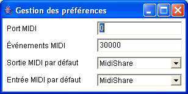

Fenêtre de préférences

La fenêtre de préférences permet
de spécifier les préférences MIDI pour l'application
Elody.
- Port MIDI : numéro de port de base
utilisé par toutes les applications MidiShare d'Elody
- Événements MIDI : nombre d'événements MidiShare
désirés
- Sortie MIDI par défaut : l'application de sortie par
défaut pour toutes les applications MidiShare d'Elody
- Entrée MIDI par défaut : l'application d'entrée
par défaut pour toutes les applications MidiShare d'Elody
Elody sauve et restaure (si possible) l'ensemble des connexions
qui existent entre les applications MidiShare en service sur la machine.